RisingLight Tutorial
RisingLight 是一个 Rust 语言编写的单机分析型（OLAP）数据库系统。
在这个教程中，我们将会带领大家从零开始，一步一步地实现自己的数据库！ 从一个最简单的 SQL 解析器开始，逐步实现查询引擎、存储引擎、优化器和事务，最终能够运行工业级的 TPC-H 基准测试。
除了标准教科书上的内容以外，你还可以体验到业界最前沿的流式计算引擎 lol。
为何要做这个教程
随着数据库系统技术的快速发展（云原生数据库，HTAP一体化和智能化运维等），工业界对于数据库内核开发人员的需求与日俱增。 对于尝试进入数据库系统领域的初学者，一个最大的挑战就是如何系统地了解数据库内核的并掌握数据库内核的开发能力。 然而大多数高校的计算机本科数据库课程只会涉及SQL和数据库应用的相关知识，市面上讲解工业级数据库的书籍和文章也不适合初学者入门。 虽然很多数据库系统课程有公开的课程项目，但这些项目往往是以“代码填空”的形式呈现给大家。 著名的美国理论物理学家Richard Feynman曾经说过："What I cannot create, I do not understand"。 学习数据库系统内核的最佳方法无疑是自己从零实现一个迷你数据库系统，我们希望数据库系统领域的初学者，可以根据此教程实现自己的数据库系统 ，在了解数据库系统内核相关知识的同时提高自己的工程能力。并鼓励大家在未来为开源数据库系统（包括但不限于RisingLight和RisingWave）贡献自己的力量。
RisingLight 世界地图
如何学习本教程
正如你所见，整个 RisingLight 是一个广阔的开放世界！ 在这里你可以按照自己的兴趣，选择任意一种可行的路径来完成这个数据库的开发。 当然如果你喜欢按部就班的节奏，我们也提供一条推荐的主线路径供大家参考。
RisingLight 根据数据库中的不同方向，分成了若干小世界。它们整体上相对独立，但相互之间又有千丝万缕的关联。 每个世界由很多小任务组成，在每个任务中我们会实现一个功能。而每个功能我们都会提供一系列的标准 SQL 语句作为测试，只要通过了全部测试就算完成了这个任务！
例如在第一个任务中，我们提供的测试语句是：
SELECT 'Hello, world!'
它的期望输出是：
Hello, world!
只要你的程序对于给定的输入，能够给出正确的输出，我们就认为你正确实现了这一功能。
这种方法叫做 端到端测试（End-to-End Testing）。你可以使用任何一种方法来通过测试，并且我们鼓励大家大开脑洞去尝试不同的实现方式。
当然，在没有任何提示的情况下独立完成整个系统的设计与实现是相当困难的，但这也是对能力提高非常有帮助的。 我们欢迎对自己能力有信心的大佬们来挑战这个 Hard 模式，收获更多经验值！
对于其他同学来说，我们会带领大家完成系统的整体设计，提示一些关键的实现细节，并提供必要的框架代码， 由同学们自行实现剩下的部分。这种是类似其它教程所采用的 Normal 模式。
不过更为实际的情况是，在这个教程出来一段时间之后，社区中一定会涌现出大量的优秀作业供大家参考。 考虑到这点，我们干脆直接公开每个任务的完整代码，官方提供《RisingLight 源码解析》。 赶时间的朋友就不用亲自下场写代码了，直接来玩适合快速通关的 Easy 模式 吧。
以上三种模式，同学们可以根据自己的情况，选择适合自己的方式来完成每个任务。 需要提醒大家的是，付出和收获往往是成正比的，我们鼓励大家在力所能及的范围内去做更有挑战性的尝试。
为了这种难度的区别，每个任务的文档会分为以下几个部分：
- 背景知识：介绍完成任务所必须掌握的知识，提供参考资料
- 任务目标：描述任务需要完成的内容，需要通过的测试
- 整体设计：介绍代码框架和需要注意的细节
- 源码解析：详细介绍实现代码
如果你想挑战 Hard，那么看到 2 就可以开始动手了；如果你选择 Normal，那么还可以继续看完 3；而如果你是 Easy 玩家，那就看完全部文档吧！
入门
欢迎来到新手村！
在这里我们将白手起家，构建出一个能够运行简单 SQL 语句的数据库框架。
在此过程中，我们会从一个 SQL 解析器开始，逐步引入查询引擎所需的各个模块。
最终实现数据库的 3 条基本命令：创建 CREATE，插入 INSERT 和查找 SELECT。
世界地图

-
Hello SQL：实现最简单的 SQL 解释器。
-
Catalog：定义 Catalog 相关数据结构。
-
创建表：实现 Binder。支持
CREATE TABLE语句。 -
内存存储：实现分析型数据库特有的列式存储数据结构。
-
插入数据：向表中插入数据，支持
INSERT VALUES语句。 -
执行计划：实现执行计划树，支持
EXPLAIN语句。 -
查询数据：从表中读取数据，支持
SELECT v FROM t语句。 -
执行引擎：实现向量化模型的执行引擎。
除此之外，还有以下小练习：
-
删除表：支持
DROP TABLE语句。 -
创建 Schema：支持
CREATE SCHEMA语句。
从新手村成功毕业以后，我们就有了探索其他世界所需的代码基础。
Hello, SQL!
作为万里长征的第一步，在这个任务中我们会构建起 RisingLight 数据库的基本框架，并且使它能够运行最简单的 SQL 语句。
背景知识
数据库
数据库是结构化数据的有组织集合。它通常是大部分应用存储数据的核心组件。
针对不同的应用场景，数据库演化出了非常多的类型。按数据模型来分，有传统的关系数据库、对象、文档、KV、图、流、时序数据库等。 按业务特点来分，则主要有事务型（OLTP）和分析型（OLAP）两种。其中前者以增删改为主，后者以查询为主。 他们内部的区别主要体现在存储格式上：事务型一般采用按行存储，而分析型则采用列式存储。
我们的 RisingLight 是一个简单的分析型关系数据库。
SQL
SQL 是数据库领域最流行的编程语言。它的全称是 Structured Query Language（结构化查询语言），用来访问和处理数据库中的数据。
SQL 语言的背后是 关系代数 模型，具有非常坚实的理论基础。
关于 SQL 语言的更多介绍可以参考 CMU 15-445 Lecture 01/02 的相关内容。
由于 SQL 在数据库中的广泛应用，我们的 RisingLight 也采用 SQL 作为操作数据库的唯一接口，并且后续会以 SQL 语言特性为导向进行相关功能的开发。
DuckDB
DuckDB 是一个轻量级嵌入式分析型数据库，可以类比作 OLAP 领域的 SQLite。
你可以按照这里的说明下载安装 DuckDB，然后在其中输入 SQL 命令进行体验。
RisingLight 的功能定位和 DuckDB 很相似，并且一定程度上参考了 DuckDB 的设计与实现。 如果大家在实现数据库的过程中遇到困难，那么 DuckDB 是一个很好的学习和参考对象。
SqlLogicTest
SqlLogicTest 是一个检验数据库执行结果正确性的测试框架，最早被用来测试 SQLite。它定义了一种脚本语言来描述 SQL 测试语句和期望输出结果。
以一个最简单的测试为例：
query I # query 表示查询，I 表示期望输出是一个整数
SELECT 1 # 输入的 SQL 语句
---- # 分隔符，接下来描述期望结果
1 # 期望输出 1，测试器会检查它和数据库输出的字符串是否一致
我们的 RisingLight 就使用了 sqllogictest 来做端到端测试。你可以在 code/sql 文件夹下找到每个任务对应的 sqllogictest 测试脚本。
Rust
RisingLight 使用 Rust 语言编写！
Rust 是新时代的系统级编程语言，主要为了解决 C/C++ 中的内存安全问题而生。 Rust 在不使用垃圾回收的前提下，通过引入所有权和生命周期等机制在编译期保证程序不会非法使用内存，让程序既运行高效又安全可靠。 这使得它成为编写数据库系统的很好选择。
然而凡事都有两面，Rust 严格的语言机制使得它具有很高的学习门槛。并且一些在其它 OOP 语言中能轻而易举完成的操作，到了 Rust 中就很难实现。 我们在编写 RisingLight 的过程中也遇到了这些问题，在后面的章节中我们也会具体介绍应该如何处理或绕过它们。
整体来讲，使用 Rust 编写数据库能为我们带来很多好处。大家在后面的 coding 过程中可以亲自体会！
任务目标
简单介绍完了背景知识，下面我们就可以开始动手了！
在第一个任务中你需要从零开始搭起一个最简单的数据库框架。它需要提供一个可交互的终端，能够接收用户输入的 SQL 语句并输出结果：
> SELECT 'Hello, world!'
Hello, world!
这就是我们要支持的第一个 SQL 命令：SELECT 一个常数，然后输出它：）
除此之外，我们还要搭起一个端到端测试框架，能够运行第一个 sqllogictest 脚本：01-01.slt。
整体设计
为了完成上面的目标，我们需要实现四个简单的模块：
- Parser：负责解析 SQL 语句并生成抽象语法树（AST）
- Executor：负责执行解析后的 SQL 语句
- Shell：一个可交互的命令行终端
- Test：一个基于 sqllogictest 脚本的测试框架
它们之间的关系如图所示：
我们可以把它们实现到不同的文件里：
src
├── parser.rs
├── executor.rs
├── lib.rs
├── main.rs
└── test.rs
其中 lib 是数据库本体，会被编译成一个程序库。main 是 cargo run 运行的可执行文件，test 是 cargo test 运行的测试。
Parser
为了读懂用户输入的 SQL 命令，你首先需要一个 SQL 解析器（Parser）。对于上面这条 SQL 语句来说，自己手写一个字符串解析就足够了。 不过随着之后 SQL 语句越来越复杂，解析 SQL 的复杂度也会与日俱增。既然我们又不是编译原理课，Parser 并不是我们关注的重点， 因此在 RisingLight 中我们推荐大家使用第三方库 sqlparser-rs 来完成 SQL 解析的工作，具体用法可以参考它的文档。
简单来说，我们可以创建一个 Parser 对象，然后使用 parse_sql 方法将字符串解析成一颗抽象语法树（AST）。
抽象语法树的各个节点定义在 ast 模块中，我们可以从根节点 Statement 开始，一级一级地查看里面的内容。
当我们要实现解析某种特定的 SQL 语句时，一个好办法是直接 debug 输出解析后 AST 的完整结构，观察我们想要的东西分别被解析到了哪个位置上，然后在代码中提取相应的内容。
use sqlparser::dialect::PostgreSqlDialect; use sqlparser::parser::Parser; fn main() { let mut sql = String::new(); std::io::stdin().read_line(&mut sql).unwrap(); let stmts = Parser::parse_sql(&PostgreSqlDialect {}, &sql); println!("{:#?}", stmts); }
例如我们使用上述代码，输入 SELECT 'Hello, world!'，就会得到以下输出：
Ok(
[
Query(
Query {
with: None,
body: Select(
Select {
distinct: false,
top: None,
projection: [
UnnamedExpr(
Value(
SingleQuotedString(
"Hello, world!",
),
),
),
],
from: [],
lateral_views: [],
selection: None,
group_by: [],
cluster_by: [],
distribute_by: [],
sort_by: [],
having: None,
},
),
order_by: [],
limit: None,
offset: None,
fetch: None,
},
),
],
)
Executor
在完成 SQL 解析得到抽象语法树后，我们就可以根据 SQL 的语义来执行它。
对于 SELECT 'Hello, world!' 来说，你只需要根据上面的结构，逐级提取出 "Hello, world!" 字符串即可：
#![allow(unused)] fn main() { use sqlparser::{SetExpr, Statement}; match stmt { Statement::Query(query) => match &query.body { SetExpr::Select(select) => { // ... } _ => todo!("not supported statement: {:#?}", stmt), }, _ => todo!("not supported statement: {:#?}", stmt), } }
随着之后 SQL 语句变得越来越复杂，我们会在 Parser 和 Executor 之间加入更多的模块。来处理变量绑定和调整执行计划。
错误处理
目前为止我们只关注了程序正常执行的情况，但在实际环境下数据库中可能出现各种各样的错误，最常见的比如用户输入了不合法的 SQL 语句。 在开发初期遇到这种情况时，我们可以简单粗暴地直接 panic 中止程序。但是一个合格的程序应该向用户报告错误，而不影响自身正常运行：
> SELET 1
parse error: Expected an SQL statement, found: SELET
> |
Rust 语言中没有 throw-catch 的异常机制，而是通过返回 Result 类型来处理错误。
目前在 Rust 生态中错误处理的最佳实践是使用 thiserror 库来定义错误类型。
在我们的数据库中，每个模块都可能发生一些错误。例如 Parser 模块会返回 sqlparser 定义的 ParserError，Executor 未来可能在读写文件时返回标准库定义的 std::io::Error。
而在实现顶层结构时，就需要定义一种 Error 类型把它们聚合起来。我们推荐大家使用下面的风格来实现它：
#![allow(unused)] fn main() { pub use sqlparser::parser::ParserError; /// The error type of execution. #[derive(thiserror::Error, Debug)] pub enum ExecuteError { // ... } /// The error type of database operations. #[derive(thiserror::Error, Debug)] pub enum Error { #[error("parse error: {0}")] Parse(#[from] ParserError), #[error("execute error: {0}")] Execute(#[from] ExecuteError), } }
这样，每个模块都返回自己定义的错误类型，在顶层模块中使用 ? 就可以完成自动类型转换：
#![allow(unused)] fn main() { mod parser { pub fn parse(sql: &str) -> Result<..., ParserError> {...} } mod executor { pub fn execute(...) -> Result<..., ExecuteError> {...} } fn run(sql: &str) -> Result<..., Error> { let stmt = parser::parse(sql)?; let output = executor::execute(stmt)?; Ok(output) } }
Shell
实现一个朴素的可交互终端非常简单，只需使用标准库提供的 stdin 输入，println! 宏输出即可。
但是，一个对用户友好的终端一般还需要支持光标移动和历史记录等功能 （如果你使用 stdin 读取用户输入，那么在按上下左右键时会出现一些奇怪的控制字符）。 而自己实现这些未免枯燥乏味，因此我们也可以使用第三方库 rustyline 来帮我们解决这个问题。
一个简单的用法如下：
fn main() { let mut rl = rustyline::Editor::<()>::new(); loop { match rl.readline("> ") { Ok(line) => { rl.add_history_entry(&line); println!("Line: {:?}", line); } Err(ReadlineError::Interrupted) => {} Err(ReadlineError::Eof) => break, Err(err) => println!("Error: {:?}", err), } } }
Test
测试是系统开发中的重要环节。 这部分我们实现了自己的 sqllogictest 库来做测试脚本的解析和运行。
你只需实现一个 Database struct，并为它实现 DB trait。然后就可以使用 Runner 来运行测试了：
#![allow(unused)] fn main() { impl sqllogictest::DB for Database { type Error = Error; fn run(&self, sql: &str) -> Result<String, Self::Error> {...} } #[test] fn test() { let script = std::fs::read_to_string(Path::new("../sql/01-01.slt").unwrap(); let mut tester = sqllogictest::Runner::new(Database::new()); tester.run_script(&script); } }
我们提供了一份完整的测试框架代码 test.rs，你可以直接把它复制到你的项目中。
在运行测试时，你可以开启 RUST_LOG=info 和 RUST_BACKTRACE=1 这两个环境变量。开启这两个选项可以方便定位运行过程的错误。
总结
以上我们介绍了实现一个最简单数据库框架所需的四个模块，每个模块的实现思路和值得关注的问题。 在每个模块中我们都使用了一个第三方库来快速实现某种功能，这也是 Rust 语言生态的一大优势。
下一步我们将实现 Catalog，为数据定义它的结构，从而为建表和插入做准备。
Catalog
关系型数据库存储结构化的数据。其中有一部分描述这些结构的“元数据”就被称为 Catalog。 在这个任务中我们将学习关系数据库的基本模型，为数据库定义好 Catalog 相关的数据结构，从而为后面插入数据做准备。
背景知识
数据库中包含了各种各样的对象。
表（Table）
我们最熟悉的对象是 表（Table），它是关系型数据库中存储数据的基本单位。
一张表可以理解为一个二维数组，它由纵向的列和横向的行组成。 每一列表示数据的某种属性（Attribute），每一行则表示一条数据记录（Record）。
例如下面展示了一个简单的记录学生信息的表：
| id | name | age |
|---|---|---|
| 1 | Alice | 18 |
| 2 | Bob | 19 |
| 3 | Eve | 17 |
在偏理论的语境下，表还有一个更正式的名字叫做 关系（Relation），因为它蕴含了数据属性之间的关系。 其中，每一行又被称为 元组（Tuple）。

表中的每一列都有自己的名字和类型。比如在上面的表中，第一列的名字是 id，数据类型是 INTEGER（整数）。而第二列的数据类型是 VARCHAR（字符串）。
各种数据库都会支持大量的数据类型，其中比较常见的有下面几种：
INTEGER：有符号整数DOUBLE：浮点数CHAR：定长字符串VARCHAR：变长字符串DECIMAL：十进制定点数，用来做无误差的精确运算（常用在交易系统中表示账户金额）DATE：日期和时间
部分类型还可以有自己的关联参数，例如：
CHAR(n)表示长度为n的字符串VARCHAR(n)表示最大长度为n的字符串DECIMAL(m, d)表示有效数字m位、小数点后d位的定点数。
表中每一列的数据都只能存储指定的类型，他们所有合法值的集合称为 数据域（Data Domain）。
在一般情况下，所有数据域都包含一个特殊的 空值 NULL。也就是说，表中的每个位置默认都可以为空。
除了名字和类型以外，每一列还有一些可选的属性：
-
非空
NOT NULL：表示这一列的值不能为NULL。 -
唯一
UNIQUE：表示这一列的值不能重复。 -
主键
PRIMARY KEY：主键能够唯一地表示表中的一行，一般用来作为索引。因此主键一定是唯一且非空的，并且每个表只能有一个主键。例如在上面的学生表中，
id就可以作为主键。
在 SQL 语言中，数据定义语言（Data Definition Language，DDL） 可以用来描述一个表的模式信息。 比如上面的学生表就可以通过以下语句来定义：
CREATE TABLE student (
id INTEGER PRIMARY KEY,
name VARCHAR NOT NULL,
age INTEGER
);
我们会在下一个任务中具体实现它：）
视图（View）
视图（View） 是一种虚拟的表，它表示一条 SQL 语句的查询结果。每次查看视图时，数据库都会执行一遍查询以获取最新的结果。
例如，我们可以用 DDL 创建一个关于学生名字的视图：
CREATE VIEW student_name AS
SELECT name FROM student;
类似地还有另一个概念叫做 物化视图（Materialized view）。它将查询结果缓存下来，并在特定时期进行更新。
索引（Index）
索引（Index） 是对数据库中某一列或多列数据进行排序的结构，用来快速查询表中的记录。
关系型数据库一般会对主键自动创建索引。如果还有其它的列需要大量随机访问或范围查询，就可以手动为它们创建索引来加速。 例如，我们可以用 DDL 创建学生名字的索引：
CREATE INDEX student_name ON student (name);
索引的经典实现是 B+ 树，这是一种适合存储在磁盘上的平衡树。
由于它的实现比较复杂，因此在 RisingLight 中我们暂时不会涉及索引。
模式（Schema）
模式（Schema） 是数据库对象的集合。上面提到的表、视图、索引等都可以被包含在一个 Schema 当中。 对于有用户权限的数据库系统，在 Schema 上可以指定不同的用户权限。
在 DDL 中我们可以先创建一个 Schema，然后在这个 Schema 内部创建其它对象：
CREATE SCHEMA school;
CREATE TABLE school.student (...);
部分数据库（比如 Postgres）在 Schema 之上还有一个层级 Database，一个 Database 可以包含多个 Schema。
不过其它大部分数据库都没有这个额外的层级：在 MySQL 中 DATABASE 和 SCHEMA 是同义词，在 SQLite 或 DuckDB 这类简单的嵌入式数据库中则不存在 DATABASE 这个关键词。
总的来看，一个数据库内部对象的层次结构可以表示成这样的一棵树：

当前任务的目标就是实现描述它的数据结构。
任务目标
实现 Catalog 相关数据结构，包括：Database，Schema，Table，Column 四个层级。
能够准确描述上面提到的这种表：
CREATE TABLE student (
id INTEGER PRIMARY KEY,
name VARCHAR NOT NULL,
age INTEGER
);
除此之外，这个任务没有新增的 SQL 测试。
整体设计
首先，我们提供一种可供参考的接口设计：
#![allow(unused)] fn main() { // 整个数据库的 Catalog 根节点 pub struct DatabaseCatalog {...} impl DatabaseCatalog { pub fn add_schema(&self, name: &str) -> SchemaId {...} pub fn get_schema(&self, id: SchemaId) -> Option<Arc<SchemaCatalog>> {...} pub fn del_schema(&self, id: SchemaId) {...} } // 一个 Schema 的 Catalog pub struct SchemaCatalog {...} impl SchemaCatalog { pub fn id(&self) -> SchemaId {...} pub fn name(&self) -> String {...} pub fn add_table(&self, name: &str, columns: &[(String, ColumnDesc)]) -> TableId {...} pub fn get_table(&self, id: TableId) -> Option<Arc<TableCatalog>> {...} pub fn del_table(&self, id: TableId) {...} } // 一个表的 Catalog pub struct TableCatalog {...} impl TableCatalog { pub fn id(&self) -> TableId {...} pub fn name(&self) -> String {...} pub fn get_column(&self, id: ColumnId) -> Option<Arc<ColumnCatalog>> {...} pub fn all_columns(&self) -> Vec<Arc<ColumnCatalog>> {...} } // 一个列的 Catalog pub struct ColumnCatalog {...} impl ColumnCatalog { pub fn id(&self) -> ColumnId {...} pub fn name(&self) -> String {...} pub fn desc(&self) -> ColumnDesc {...} } // 一个列的完整属性 pub struct ColumnDesc {...} impl ColumnDesc { pub fn is_nullable(&self) -> bool {...} pub fn is_primary(&self) -> bool {...} pub fn datatype(&self) -> DataType {...} } // 一个列的数据类型，包含了“可空”信息 pub struct DataType {...} impl DataType { pub fn is_nullable(&self) -> bool {...} pub fn kind(&self) -> DataTypeKind {...} } // 一个值的数据类型，不考虑空值 // 为了方便，我们可以直接使用 sqlparser 中定义的类型 pub use sqlparser::ast::DataType as DataTypeKind; }
为了代码结构清晰，可以把它们拆成多个文件：
src
├── catalog
│ ├── mod.rs
│ ├── database.rs
│ ├── schema.rs
│ ├── table.rs
│ └── column.rs
├── types.rs
...
由于 Catalog 会在数据库中多个地方被读取或修改，因此我们把它们设计为 可被共享访问 的数据结构（Send + Sync）。
这种 struct 的一个特点就是所有方法都标记 &self 而不是 &mut self，即使对于修改操作也不例外。
这种模式在 Rust 中被称为 内部可变性。
实现这种模式通常需要定义两层 struct：内层是普通的可变结构，然后在外面包一层锁。
以顶层的 DatabaseCatalog 为例：
#![allow(unused)] fn main() { use std::sync::Mutex; // 外部 Sync 结构 pub struct DatabaseCatalog { inner: Mutex<Inner>, // 对于读多写少的场景，也可以使用 RwLock } // 内部可变结构 struct Inner { schemas: HashMap<SchemaId, Arc<SchemaCatalog>>, // ... } }
当我们为外层结构实现方法的时候，需要先 lock 住内部结构，然后去访问 inner：
#![allow(unused)] fn main() { impl DatabaseCatalog { pub fn get_schema(&self, schema_id: SchemaId) -> Option<Arc<SchemaCatalog>> { let inner = self.inner.lock().unwrap(); inner.schemas.get(&schema_id).cloned() } } }
如果函数体过于复杂，也可以把它拆成多个 Inner 对象上的小函数：
#![allow(unused)] fn main() { impl DatabaseCatalog { pub fn add_schema(&self, name: &str) { let inner = self.inner.lock().unwrap(); let id = inner.next_id(); inner.add_schema(id, name); } } impl Inner { fn add_schema(&mut self, schema_id: SchemaId, name: &str) {...} fn next_id(&mut self) -> SchemaId {...} } }
主要的技巧就是这些，代码本身并不复杂。下一步我们就会基于这里定义的数据结构，来实现 CREATE TABLE 创建表操作了！
创建表（CREATE TABLE）
在实现了 Catalog 之后，我们就可以使用 CREATE TABLE 语句创建数据表：
CREATE TABLE student (
id INTEGER PRIMARY KEY,
name VARCHAR NOT NULL,
age INTEGER
);
这一语句除了解析和执行两个步骤以外，还需要做名称的检查，并将它们与数据库内部对象绑定起来。 这些工作一般是由一个叫做 Binder 的模块完成。
在此任务中，我们将实现一个基础的 Binder，同时拓展 Executor 实现相应的执行逻辑，最终支持 CREATE TABLE 语句。
背景知识
Binder
Binder 是整个数据库系统中一个不太起眼但又十分重要的模块。
它的作用是将解析后生成的 AST 和 Schema 信息绑定起来，具体包括：
- 检查输入的名称是否合法、是否有重复、有歧义
- 推断表达式的返回值类型，并检查是否合法
- 将输入的名称转换成内部 ID
比如，对于一个简单的创建表的命令：
CREATE TABLE student (
id INTEGER PRIMARY KEY,
name VARCHAR NOT NULL,
age INTEGER
);
Binder 会依次完成以下工作：
- 由于 SQL 对大小写不敏感，Binder 会首先将所有名称统一成小写。
- 对于表名
student，自动补全省略的 schema 名。假如当前 schema 是school，那么会将其补全成school.student。 - 检查 schema 是否存在，并获取它的 Schema ID。
- 检查 schema 中是否已经存在名为
student的表。 - 检查列名
idnameage是否合法、是否有重复。 - 检查列的属性是否合法，例如不能出现两个
PRIMARY KEY。 - 向 AST 中填入绑定后的信息：Schema ID。
对于插入数据的 INSERT 语句，例如：
INSERT INTO student VALUES (1, 'Alice', 18)
Binder 需要查询表中每一列的信息，推断表达式的类型，并检查它们是否相符。 换言之，Binder 应该能够识别出以下不合法的插入语句：
INSERT INTO student VALUES (1) -- 存在未指定的 NOT NULL 值
INSERT INTO student VALUES (1, 'Alice', 'old') -- 类型不匹配
INSERT INTO student VALUES (1, 'Alice', 18+'g') -- 表达式类型不匹配
对于更复杂的嵌套查询语句，Binder 还需要根据当前语境，推断出每个名称具体指代哪个对象：
SELECT name FROM student WHERE sid IN (
-- ^-----------^ student.sid
SELECT sid FROM enrolled WHERE class = 'database'
-- ^----------^ enrolled.sid
)
可以看出，Binder 干的都是一些比较繁琐的脏活累活。因此后面我们写的 Binder 代码也会比较冗长并且细节琐碎。
任务目标
能够创建数据表，支持以下 SQL 语句：
CREATE TABLE student (
id INTEGER PRIMARY KEY,
name VARCHAR NOT NULL,
age INTEGER
);
【练习】支持 DROP TABLE 语句，删除数据表：
DROP TABLE student;
【练习】支持 CREATE SCHEMA 语句，创建 schema：
CREATE SCHEMA school;
整体设计
在加入 Binder 之后，RisingLight 的整个数据处理流程扩展成了这个样子：

其中 Binder 插在了 Parser 和 Executor 之间。 它会将 Parser 生成的 AST 进行处理后，生成一个新的 AST 交给 Executor，在此过程中需要从 Catalog 读取 Schema 信息。 Executor 拿到绑定后的 AST 去执行，在此过程中可能也会再次修改 Catalog（比如创建一个表）。
在代码结构上，我们可能会新增以下文件：
src
├── binder
│ ├── mod.rs
│ └── statement
│ ├── mod.rs
│ ├── create.rs
│ └── select.rs
├── executor
│ ├── mod.rs
│ ├── create.rs
│ └── select.rs
...
此外还需要对数据库顶层结构进行修改。
Bound AST
Binder 模块的主要任务是给 Parser 生成的 AST 绑定必要的信息。
由于我们的 Parser 使用了第三方库，不能在它的 AST 结构上扩展新的属性，所以只能定义新的结构来存放这些信息。
例如对于 CREATE TABLE 语句来说，绑定后的 AST 应该具有以下信息：
#![allow(unused)] fn main() { // binder/statement/create.rs /// A bound `CREATE TABLE` statement. #[derive(Debug, PartialEq, Clone)] pub struct BoundCreateTable { pub schema_id: SchemaId, // schema name 经过向 catalog 查询转换成了 ID pub table_name: String, pub columns: Vec<(String, ColumnDesc)>, } }
类似地，对于 1.1 中的 SELECT 1 语句而言，我们可以只提取出必要的值来保存：
#![allow(unused)] fn main() { // binder/statement/select.rs use crate::parser::Value; /// A bound `SELECT` statement. #[derive(Debug, PartialEq, Clone)] pub struct BoundSelect { pub values: Vec<Value>, } }
最后，我们需要定义一个 enum 将各种不同类型的语句聚合起来：
#![allow(unused)] fn main() { // binder/mod.rs /// A bound SQL statement. #[derive(Debug, PartialEq, Clone)] pub enum BoundStatement { CreateTable(BoundCreateTable), Select(BoundSelect), } }
这样，一个 BoundStatement 变量就可以表示 Binder 生成的整个 AST 了。
Binder
接下来，我们实现真正的 Binder 对象。它会将 Parser 生成的 AST 转换成一个新的 AST。
由于在绑定过程中会访问 Catalog 的数据，Binder 中需要存放一个 Catalog 对象的指针：
#![allow(unused)] fn main() { pub struct Binder { catalog: Arc<Catalog>, } }
我们在 Binder 对象上实现各种 bind 方法来完成对不同 AST 节点的处理：
#![allow(unused)] fn main() { use crate::parser::{Query, Statement}; impl Binder { pub fn bind(&mut self, stmt: &Statement) -> Result<BoundStatement, BindError> { use Statement::*; match stmt { CreateTable { .. } => Ok(BoundStatement::CreateTable(self.bind_create_table(stmt)?)), Query(query) => Ok(BoundStatement::Select(self.bind_select(query)?)), _ => todo!("bind statement: {:#?}", stmt), } } fn bind_create_table(&mut self, stmt: &Statement) -> Result<BoundCreateTable, BindError> { // YOUR CODE HERE } fn bind_select(&mut self, query: &Query) -> Result<BoundSelect, BindError> { // YOUR CODE HERE } } }
注意到这些方法都使用了 &mut self 签名，这是因为 Binder 未来会有内部状态，并且在 bind 过程中还会修改这些状态。
另外在 bind 过程中还可能产生各种各样的错误，比如名称不存在或者重复等等。
我们将所有可能发生的错误定义在一个 BindError 错误类型中（参考 1.1 错误处理）：
#![allow(unused)] fn main() { /// The error type of bind operations. #[derive(thiserror::Error, Debug, PartialEq)] pub enum BindError { #[error("schema not found: {0}")] SchemaNotFound(String), // ... } }
至于具体的 bind 逻辑，大家可以参考背景知识中描述的过程尝试自己实现。
Executor
在 1.1 中我们实现过一个最简单的执行器，它只是一个函数，拿到 AST 后做具体的执行。 现在我们有了更多类型的语句，并且在执行它们的过程中还需要访问 Catalog。 因此和 Binder 类似，我们现在需要将 Executor 也扩展为一个对象：
#![allow(unused)] fn main() { pub struct Executor { catalog: Arc<Catalog>, } }
然后在 Executor 上实现各种 execute 方法来对不同类型的 AST 节点做执行：
#![allow(unused)] fn main() { /// The error type of execution. #[derive(thiserror::Error, Debug)] pub enum ExecuteError {...} impl Executor { pub fn execute(&self, stmt: BoundStatement) -> Result<String, ExecuteError> { match stmt { BoundStatement::CreateTable(stmt) => self.execute_create_table(stmt), BoundStatement::Select(stmt) => self.execute_select(stmt), } } fn execute_create_table(&self, stmt: BoundCreateTable) -> Result<String, ExecuteError> { // YOUR CODE HERE } fn execute_select(&self, query: BoundSelect) -> Result<String, BindError> { // YOUR CODE HERE } } }
我们暂时将 Executor 的返回值设定为 String 类型，表示语句的执行结果。
在下一个任务中，我们会实现更具体的内存数据类型 Array 和 DataChunk。
到那时，Executor 的输出就是一段真正的数据了。
内存存储
有了表之后，我们就可以向其中导入数据了！数据在被持久化存储之前，会首先写入到内存中。 因此在本节中我们会先实现一个内存存储系统（In-memory Storage）。
对于分析型数据库（OLAP）而言，为了读取和计算的高效，它们大多使用列式存储，即同一列的数据在内存中被紧密地排列在一起。 这种数据结构就是我们所熟悉的数组（Array）。
每一列的数据用一个数组表示，多个列的数据就组成了数据块（DataChunk）。和 Array 一样，DataChunk 也是数据库中重要的基础类型。在我们的内存存储系统中，数据就是以 DataChunk 的形式存储在表内。同时它也是未来数据库执行引擎中，各个算子之间传递数据的基本类型。
任务目标
对于四种数据类型：布尔 bool、整数 i32、浮点数 f64、字符串 &str，实现它们的 Array，以及用来构建数组的 ArrayBuilder。
此外，还需实现一个简单的内存存储系统，支持插入、删除表，并支持向表中插入数据、从表中读取数据。
一种可供参考的接口设计：
#![allow(unused)] fn main() { pub struct InMemoryStorage {...} impl InMemoryStorage { pub fn new() -> Self {...} pub fn add_table(&self, id: TableRefId) -> StorageResult<()> {...} pub fn get_table(&self, id: TableRefId) -> StorageResult<Arc<InMemoryTable>> {...} } pub struct InMemoryTable {...} impl InMemoryTable { pub fn append(&self, chunk: DataChunk) -> StorageResult<()> {...} pub fn all_chunks(&self) -> StorageResult<Vec<DataChunkRef>> {...} } }
除此之外，本节没有新增的 SQL 测试。
插入数据（INSERT）
在实现完内存存储系统之后，我们就可以正式向数据库中添加数据了。
用于向表中插入数据的 SQL 语句是 INSERT，它的一般形式为：
INSERT INTO t(a, b) VALUES (1, 10), (2, 20)
数据库需要首先解析表达式的值，为每一列构建 Array，然后按列排好序后插入到表中。
背景知识
TODO
任务目标
能够向表中插入数据，支持以下 SQL：
INSERT INTO t(a, b) VALUES (1, 10)
执行计划
为了更好的实现各种复杂的数据查询操作，我们首先扩展。
背景知识
逻辑计划（Logical Plan）
物理计划（Physical Plan）
任务目标
能够使用 EXPLAIN 语句输出其它 SQL 语句的执行计划：
EXPLAIN INSERT INTO t(a, b) VALUES (1, 10)
查询数据（SELECT）
任务目标
能够从表中读取数据，支持以下 SQL：
SELECT * FROM t
SELECT a, b FROM t
SELECT a, b, 1 FROM t
执行引擎
背景知识
迭代模型
物化模型
向量化模型
任务目标
改造数据库执行引擎，实现向量化模型（Vectorizaion Model），使得数据库能够利用多线程并行执行算子。
整体设计
Async Rust 速成
查询
算术运算（+-*/）
条件查询（WHERE）
排序（ORDER BY）
限制行数（LIMIT）
聚合（SUM）
分组聚合（GROUP BY）
连接（JOIN）
哈希连接（Hash Join）
导入数据（COPY）
TPC-H
存储
什么时候需要列存引擎？🤔
数据库用户通常会在分析型 (OLAP) 数据库系统上对大量数据进行统计分析。举个例子，假设我们有一张记录用户点击量的表，记录用户什么时候访问了什么网页，从哪里来，看了多久：
| 点击时间 (time) | URL | 用户名 (username) | 停留时长 (min) (length) | 来源 (referrer) |
|---|---|---|---|---|
| 10:00am | risinglightdb/risinglight | user1 | 1 | github.com |
| 10:01am | risinglightdb/risinglight/issues | user2 | 2 | github.com/risinglightdb |
| ... | ... | ... | ... | ... |
对于数据库用户来说，它们关心的一项内容可能是：过去一小时内，有多少用户访问了 risinglight。
SELECT count(*) FROM table WHERE time >= "10am" AND time <= "11am"
行存引擎在盘上将同一行的内容存储在一起，列存引擎将一列的内容存储在一起。接下来我们看看这条 query 在行存和列存引擎上分别需要访问多少数据。

在这个 query 中，我们只需要访问 time 列的数据就能获得结果。在行存引擎里，由于同一行的数据是相邻的，取得 time 值的同时也需要把同一行的其他信息从盘上读取出来。在列存引擎里，由于一列的数据是相邻存储的，我们只需要把这一列的数据读出来就可以得到结果了。因此，OLAP 数据库系统的数据适合存储在列存引擎中。数据按列存放，可以大大提升分析型查询的速度。
列存引擎如何存储数据？💾
最简单的“列”存
我们先做一个最简单的假设：用户只有一张表，表只有一列定长类型数据 (i64)。用户写一次就不会再写了。之后用户在表上只跑只读的全表扫描 query。在这种情况下，用什么方式存储数据是最高效的呢？我们从这么几个维度来考虑：
- 空间：数据写到盘上需要占用多少空间。
- 当我们使用列存引擎存储已经排好序的数据时，相邻的数据大概率会重复。此时若使用 Run-Length 编码 (RLE)，则可以大大减少空间占用。
- 读取：把数据从盘上读到内存里需要多少开销。
- 如果我们使用一种压缩算法直接对整列做压缩，这就意味着每次要从盘上把一整列读上来，在内存里解压，才能读到原始数据。这就会导致一定的读放大。 考虑到这个场景里用户“扫描全表”、“一次写入”，我们可以选定一种编码方法，按顺序写入数据，一次全部压缩写到盘上。在扫描全表时，一次全部读入并解压。这样可以用最少的空间达到最高效的全表扫描性能。

列存索引
用户开始考虑做一些筛选，比如 SELECT count(*) FROM table WHERE x >= 10。其中 x 是这张表的主键。在这种情况下，用户不需要扫描全表了。如果我们依然一次压缩全部写入，在读取的时候就有可能读到大量不需要的数据。因此，我们需要：
- 对列做划分，比如每 64K 做一次压缩，而不是全部写入再压缩。
- 计算机的内存是有限的，数据库通常来说都会维护自己的 buffer pool，只缓存一部分盘上的数据。在 RisingLight 的存储引擎中，我们使用 block cache 来缓存这些数据。将数据分块也可以减小缓存换入换出的开销，提升 block cache 的使用率。
- 存储引擎可以在写入时预先根据 x 对列做排序和索引，记录每一小块的起始 key，从而快速定位 x >= 10 所在的块在什么位置。
这样一来，就可以大大减少扫描 x >= 10 的读取量。我们把存储引擎最小的管理单位称作“块 (Block)”。在 RisingLight 中，Block 的大小通常是 64K - 1MB。每次读取时，先从索引找到 x >= 10 对应的块的位置，然后开始读取并解压缩 block，获得原始数据。
在 RisingLight 中，列文件都使用 .col 后缀存储，索引文件使用 .idx 或者 .sort 后缀存储。

根据主键做筛选只是一个例子（而且在 RisingLight 里面也没有实现）。在 RisingLight 中，按 block 对列做划分的特性可以用来做 filter scan。比如：
SELECT sum(y) FROM table WHERE x = 10;
即使 x 不是主键，也不一定在索引里，现在的设计中我们依然可以减少 I/O 量。我们只需要把 x = 10 的行对应的 y 扫描出来就行了。
存储多个列
现在用户的数据不止有一列了，而且每一列的数据类型都不同：
CREATE TABLE t(c1 int, c2 varchar, c3 float, primary key(v1))
数据类型不同，意味着写入时，block 不能根据行对齐。举个例子，在 c1 中，假设前 100 个 i64 数据可以正好塞进一个 block。现在的 c2 列类型是 varchar，每一个数据都是不定长的。它的前 100 行可能塞不满一个 block，也有可能超过一个 block。在这种情况下，我们应该继续保持 block 大小不变，让不同列的同一个位置的 block 包含不同个数的数据；还是保持每个 block 行数相等？

RisingLight 的选择是不对齐 Block。这是出于两个考虑：
- Block Cache 更好管理：Block Cache 里的每一项长度几乎相同，只需要限制 Block Cache 的项数就可以很好的估计内存占用。
- I/O 更可控：Block 是最小的管理单元、最小的读盘单元。如果每个 Block 大小几乎相同，每个 I/O 请求的大小就更可控，延迟也更可控。
多个相同行数的列会被放在同一个文件夹中，称为 RowSet。一个 RowSet 由 n 个列和 n 个索引组成，每一列包含相同的行数。
存储整张表
一个用户表的数据通常不可能一次全部导入，用户往往会往表里多次 insert 数据。在 RisingLight 的设计中，每次 insert 都会产生一个新的 RowSet，所有文件一旦落盘就不会更改。同一个用户表的所有 RowSet 组合起来，才是完整的表。这里就需要考虑两个问题：
- 怎么在读取时把 RowSet 组合成一张表？
- 单个 RowSet 可能很小 (几 KB)，也有可能很大 (几 MB)。如何对它们进行整理？
先考虑读取的问题。在做全表扫描时，我们要一个接着一个地读取 RowSet。这里就需要有一个 ConcatIterator 把 RowSet 拼起来。虽然存储层里面有多个 RowSet，在数据库上层算子看来，它依然是一整张表。对于要按照主键排序的情况，我们需要实现一个 MergeIterator，对多个 RowSet 做多路归并，从而合并多个 RowSet，对计算层暴露一个排好序的表。
而后考虑整理的问题。用户不断操作数据库系统，产生大量小的 RowSet，并且也有可能“删除” RowSet 中的数据。大量小的 RowSet 对多路归并的性能会产生影响。因此，我们需要定期对存储引擎中的数据做整理。在 Merge-Tree 引擎中，所有文件一旦落盘就不会更改了。因此，如果我们想要整理这些 RowSet，唯一的方法就是把需要整理的 RowSet 读出来，然后生成一个新的 RowSet。这个整理的过程被称为“Compaction”。